건설기계설비기사 (2018-08-19 기출문제)
1과목: 재료역학
1. 그림과 같이 길이 ℓ=3 m의 단순보가 균일 분포하중 ω=5 kN/m의 작용을 받고 있다. 보의 단면이 폭(b)×높이(h)=10 cm×20 cm, 탄성계수 E=10 GPa일 때, 이 보의 최대 처짐량과 지점 A에서의 기울기는? (단, 보의 굽힘강성 EI는 일정하다.)
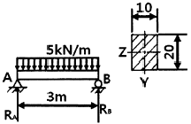
- δmax=0.79 cm, θ=0.483°
- δmax=0.89 cm, θ=0.483°
- δmax=0.79 cm, θ=0.683°
- δmax=0.89 cm ,θ=0.683°
(정답률: 25%)

2. 그림과 같은 단면의 x-x축에 대한 단면 2차 모멘트는?
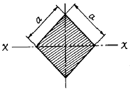
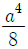
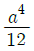
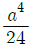
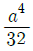
(정답률: 38%)
3. 지름이 10 mm이고, 길이가 3 m인 원형 축이 957 rpm으로 회전하고 있다. 이 축의 허용전단응력이 160 MPa인 경우 전달할 수 있는 최대 동력은 약 몇 kW인가?
- 2.36
- 3.15
- 6.28
- 9.42
(정답률: 34%)
4. 단면 치수가 8 mm×24 mm인 강대가 인장력 P=15 kN을 받고 있다. 그림과 같이 30°경사진 면에 작용하는 수직응력은 약 몇 MPa인가? (문제 오류로 가답안 발표시 3번으로 발표되었지만 확정답안 발표시 모두 정답처리 되었습니다. 여기서는 1번을 누르면 정답 처리 됩니다.)
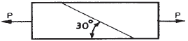
- 29.5
- 45.3
- 58.6
- 72.6
(정답률: 33%)
5. 길이 4 m인 단순보의 중앙에 500 N의 집중하중이 작용하고 있다. 10 cm×10 cm의 4각 단면보라고 하면 굽힘응력은 몇 N/cm2인가?
- 300
- 400
- 500
- 600
(정답률: 27%)
6. 길이가 2 m인 환봉에 인장하중을 가하여 변화된 길이가 0.14 cm일 때 변형률은?
- 70×10-6
- 700×10-6
- 70×10-3
- 700×10-3
(정답률: 31%)
7. 반지름 1 cm, 길이 150 cm, 탄성계수 200 GPa의 강봉이 90 kN의 인장하중을 받을 때 탄성에너지는 약 몇 N ㆍ m인가?
- 129
- 112
- 97
- 85
(정답률: 30%)
8. 다음 보에 발생하는 최대 굽힘 모멘트는?
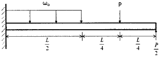
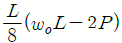
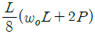
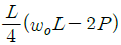
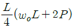
(정답률: 31%)
9. 다음 자유 물체도에서 경사하중 P가 작용할 경우 수직반력(RA) 및 수평반력(RH)은 각각 얼마인가? (단, 그림에서 보 AB와 P가 이루는 각도는 30°이다.) (문제 오류로 가답안 발표시 4번으로 발표되었지만 확정답안 발표시 모두 정답처리 되었습니다. 여기서는 1번을 누르면 정답 처리 됩니다.)
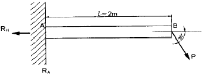
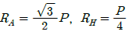
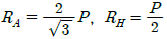
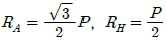
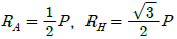
(정답률: 30%)
10. 양단이 고정된 균일 단면봉의 중간단면 C에 축하중 P를 작용시킬 때 A, B에서 반력은?
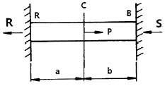
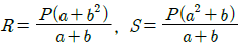
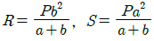
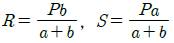
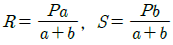
(정답률: 33%)
11. 다음 보에서 B점의 반력 RB는 얼마인가?
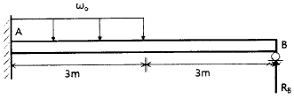
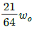
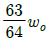
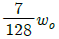
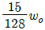
(정답률: 14%)
12. 직경이 d이고 길이가 L인 균일한 단면을 가진 직선축이 전체 길이에 걸쳐 토크 t0가 작용할 때, 최대 전단응력은?
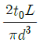
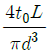
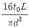
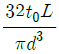
(정답률: 40%)
13. 속이 빈 주철재 기둥에 100 kN의 축방향 압축하중이 걸릴 때 오일러의 좌굴 길이를 구하면 약 몇 cm인가? (단, 양단은 회전상태이며, E=1⑤ GPa, I=260 cm4이다.)
- 319
- 419
- 519
- 619
(정답률: 36%)
14. 그림과 같은 외팔보의 임의의 거리 C되는 점에 집중하중 P가 작용할 때 최대 처짐량은? (단, 보의 굽힘 강성 EI는 일정하고, 자중은 무시한다.)
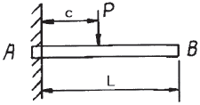
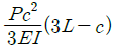
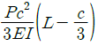
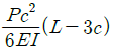
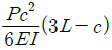
(정답률: 25%)
15. 45°각의 로제트 게이지로 측정한 결과가 ε0°=400×10-6, ε45°=400×10-6, ε90°=200×10-6일 때, 주응력은 약 몇 MPa인가? (단, 포아송 비 ν=0.3, 탄성계수 E=206 GPa이다.)
- σ1=100, σ2=56
- σ1=110, σ2=66
- σ1=120, σ2=76
- σ1=130, σ2=86
(정답률: 8%)
16. 축방향 단면적 A인 임의의 재료를 인장하여 균일한 인장응력이 작용하고 있다. 인장방향 변형률이 ε, 포아송의 비를 ν라 하면 단면적의 변화량은 약 얼마인가?
- νεA
- 2νεA
- 3νεA
- 4νεA
(정답률: 32%)
17. 그림에서 P가 1800 N, b=3 cm, h=4 cm, e=1 cm라 할 때 최대 압축응력은 몇 N/cm2인가?
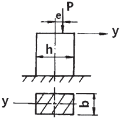
- 375
- 275
- 250
- 175
(정답률: 35%)
18. 재료와 단면이 같은 두 축의 길이가 각각 ℓ과 2ℓ일 때 길이가 ℓ인 축에 비틀림 모멘트 T가 작용하고 길이가 2ℓ인 축에 비틀림 모멘트 2T가 각각 작용한다면 비틀림각의 크기 비는?
- 1 : √2
- 1 : 2√2
- 1 : 2
- 1 : 4
(정답률: 37%)
19. 그림과 같은 보가 분포하중과 집중하중을 받고 있다. 지점 B에서의 반력의 크기를 구하면 몇 kN인가?
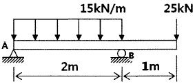
- 28.5
- 40.0
- 52.5
- 55.0
(정답률: 38%)
20. 원형 단면보의 임의 단면에 걸리는 전체 전단력이 3V일 때, 단면에 생기는 최대 전단응력은? (단, A는 원형단면의 면적이다.)
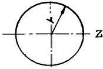
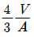
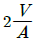
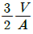
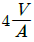
(정답률: 28%)
2과목: 기계열역학
21. 클라우지우스(Clausius) 적분 중 비가역 사이클에 대하여 옳은 식은? (단, Q는 시스템에 공급되는 열, T는 절대 온도를 나타낸다.)
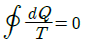
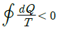
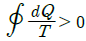
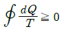
(정답률: 33%)
22. 다음 중 이상적인 스로틀 과정에서 일정하게 유지되는 양은?
- 압력
- 엔탈피
- 엔트로피
- 온도
(정답률: 29%)
23. 70 kPa에서 어떤 기체의 체적이 12 m3이었다. 이 기체를 800 kPa까지 폴리트로픽 과정으로 압축했을 때 체적이 2 m3으로 변화했다면, 이 기체의 폴리트로프 지수는 약 얼마인가?
- 1.21
- 1.28
- 1.36
- 1.43
(정답률: 31%)
24. 이상기체의 가역 폴리트로픽 과정은 다음과 같다. 이에 대한 설명으로 옳은 것은? (단, P는 압력, u는 비체적, C는 상수이다.)
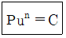
- n=0이면 등온과정
- n=1이면 정적과정
- n=∞이면 정압과정
- n=k(비열비)이면 단열과정
(정답률: 39%)
25. 공기 표준 사이클로 운전하는 디젤 사이클 엔진에서 압축비는 18, 체절비(분사 단절비)는 2일 때 이 엔진의 효율은 약 몇 %인가? (단, 비열비는 1.4이다.)
- 63 %
- 68 %
- 73 %
- 78 %
(정답률: 9%)
26. 압력 250 kPa, 체적 0.35 m3의 공기가 일정 압력 하에서 팽창하여, 체적이 0.5 m3로 되었다. 이 때 내부에너지의 증가가 93.9 kJ이었다면, 팽창에 필요한 열량은 약 몇kJ인가?
- 43.8
- 56.4
- 131.4
- 175.2
(정답률: 34%)
27. 이상기체가 등온 과정으로 부피가 2배로 팽창할 때 한 일이 W1이다. 이 이상기체가 같은 초기조건 하에서 폴리트로픽 과정(지수=2)으로 부피가 2배로 팽창할 때 한일은?
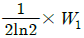
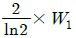
- 2ln2×W1
(정답률: 19%)
28. 역카르노 사이클로 운전하는 이상적인 냉동사이클에서 응축기 온도가 40 ℃, 증발기 온도가 -10 ℃이면 성능 계수는?
- 4.26
- 5.26
- 3.56
- 6.56
(정답률: 32%)
29. 이상기체가 등온과정으로 체적이 감소할 때 엔탈피는 어떻게 되는가?
- 변하지 않는다.
- 체적에 비례하여 감소한다.
- 체적에 반비례하여 증가한다.
- 체적의 제곱에 비례하여 감소한다.
(정답률: 34%)
30. 밀폐시스템에서 초기 상태가 300 K, 0.5 m3인 이상기체를 등온과정으로 150 kPa에서 600 kPa까지 천천히 압축하였다. 이 압축과정에 필요한 일은 약 몇 kJ인가?
- 104
- 208
- 304
- 612
(정답률: 30%)
31. 이상적인 디젤 기관의 압축비가 16일 때 압축전의 공기 온도가 90 ℃라면, 압축후의 공기의 온도는 약 몇 ℃인가? (단, 공기의 비열비는 1.4이다.)
- 1101 ℃
- 718 ℃
- 808 ℃
- 828 ℃
(정답률: 26%)
32. 공기의 정압비열(Cp kJ/(kg ㆍ ℃))이 다음과 같다고 가정한다. 이 때 공기 5 kg을 0 ℃에서 100 ℃까지 일정한 압력하에서 가열하는데 필요한 열량은 약 몇 kJ인가? (단, 다음 식에서 t는 섭씨온도를 나타낸다.)
- 85.5
- 100.9
- 312.7
- 504.6
(정답률: 32%)
33. 500 ℃의 고온부와 50 ℃의 저온부 사이에서 작동하는 Carnot 사이클 열기관의 열효율은 얼마인가?
- 10 %
- 42 %
- 58 %
- 90 %
(정답률: 38%)
34. 어떤 기체 1 kg이 압력 50 kPa, 체적 2.0 m3의 상태에서 압력 1000 kPa, 체적 0.2 m3의 상태로 변화하였다. 이 경우 내부에너지의 변화가 없다고 한다면, 엔탈피의 변화는 얼마나 되겠는가?
- 57 kJ
- 79 kJ
- 91 kJ
- 100 kJ
(정답률: 29%)
35. 두 물체가 각각 제3의 물체와 온도가 같을 때는 두 물체도 역시 서로 온도가 같다는 것을 말하는 법칙으로 온도측정의 기초가 되는 것은?
- 열역학 제0법칙
- 열역학 제1법칙
- 열역학 제2법칙
- 열역학 제3법칙
(정답률: 29%)
36. 그림과 같이 카르노 사이클로 운전하는 기관 2개가 직렬로 연결되어 있는 시스템에서 두 열기관의 효율이 똑같다고 하면 중간 온도 T는 약 몇 K인가?
- 330 K
- 400 K
- 500 K
- 660 K
(정답률: 26%)
37. 카르노 냉동기 사이클과 카르노 열펌프 사이클에서 최고 온도와 최소 온도가 서로 같다. 카르노 냉동기의 성적 계수는 COPR이라고 하고, 카르노 열펌프의 성적계수는 COPHP라고 할 때 다음 중 옳은 것은?
- COPHP+COPR=1
- COPHP+COPR=0
- COPR-COPHP=1
- COPHP-COPR=1
(정답률: 28%)
38. 에어컨을 이용하여 실내의 열을 외부로 방출하려 한다. 실외 35 ℃, 실내 20 ℃인 조건에서 실내로부터 3 kW의 열을 방출하려 할 때 필요한 에어컨의 최소 동력은 약몇 kW인가?
- 0.154
- 1.54
- 0.308
- 3.08
(정답률: 25%)
39. 랭킨 사이클의 각각의 지점에서 엔탈피는 다음과 같다. 이 사이클의 효율은 약 몇 %인가? (단, 펌프일은 무시한다.)
- 32.4 %
- 29.8 %
- 26.7 %
- 23.8 %
(정답률: 36%)
40. 열과 일에 대한 설명 중 옳은 것은?
- 열역학적 과정에서 열과 일은 모두 경로에 무관한 상태함수로 나타낸다.
- 일과 열의 단위는 대표적으로 Watt(W)를 사용한다.
- 열역학 제1법칙은 열과 일의 방향성을 제시한다.
- 한 사이클 과정을 지나 원래 상태로 돌아왔을 때 시스템에 가해진 전체 열량은 시스템이 수행한 전체 일의 양과 같다.
(정답률: 25%)
3과목: 기계유체역학
41. 유체 경계층 밖의 유동에 대한 설명으로 가장 알맞은 것은?
- 포텐셜(potential) 유동으로 가정할 수 있다.
- 전단응력이 크게 작용한다.
- 각속도 성분이 항상 양의 값을 갖는다.
- 항상 와류가 발생한다.
(정답률: 30%)
42. 다음 중 점성계수를 측정하는 점도계의 종류에 속하지 않는 것은?
- 오스트발트(Ostwald) 점도계
- 세이볼트(Saybolt) 점도계
- 낙구식 점도계
- 마노미터식 점도계
(정답률: 30%)
43. 개방된 물탱크 속에 지름 1 m의 원판이 잠겨있다. 이 원판의 도심이 자유표면보다 1 m 아래쪽에 있고, 수평 상태로 있다. 이때 도심의 깊이를 바꾸지 않은 상태에서 원판을 수직으로 세우면 원판의 한쪽 면이 받는 정수력학적 합력의 크기와 합력의 작용점은 어떻게 달라지는가? (단, 평판의 두께는 무시한다.)
- 합력의 크기는 커지고 작용점은 도심 아래로 내려간다.
- 합력의 크기는 안변하고 작용점은 도심 아래로 내려간다.
- 합력의 크기는 커지고 작용점은 안변한다.
- 합력의 크기와 작용점 모두 안변한다.
(정답률: 23%)
44. 체적 0.2 m3인 물체를 물속에 잠겨 있게 하는데 300 N의 힘이 필요하다. 만약 이 물체를 어떤 유체 속에 잠겨 있게 하는데 200 N의 힘이 필요하다면 이 유체의 비중은 약 얼마인가?
- 0.79
- 0.86
- 0.91
- 0.95
(정답률: 20%)
45. 공기 중에서 무게가 1540 N인 통나무가 있다. 이 통나무를 물속에 잠겨 평형이 되도록 하기 위해 34 kg의 납(밀도 11300 kg/m3)이 필요하다고 할 때 통나무의 평균 밀도는 약 몇 kg/m3인가?
- 782
- 835
- 891
- 982
(정답률: 16%)
46. 유체의 체적탄성계수와 같은 차원을 갖는 것은?
- 부피
- 속도
- 가속도
- 압력
(정답률: 34%)
47. 실온에서 공기의 점성계수는 1.8×10-5 Pa ㆍ s, 밀도는 1.2 kg/m3이고, 물의 점성계수가 1.0×10-3> Pa ㆍ s, 밀도는 1000 kg/m3이다. 지름이 25 mm인 파이프 내의 유동을 고려할 때, 층류 상태를 유지할 수 있는 최대 Reynolds 수가 2300이라면, 층류유동 시 공기의 최대 평균 속도는 물의 최대 평균 속도의 약 몇 배인가?
- 3.2
- 8.4
- 15
- 180
(정답률: 28%)
48. 유량이 일정한 완전난류유동에서 파이프의 마찰 손실을 줄이기 위한 방법으로 가장 거리가 먼 것은?
- 레이놀즈수를 감소시킨다.
- 관 지름을 높인다.
- 상대조도를 낮춘다.
- 곡관의 사용을 줄인다.
(정답률: 30%)
49. 입출구의 지름과 높이가 같은 팬을 통해 공기(밀도 1.2 kg/m3)가 0.01 kg/s의 유량으로 송출될 때, 압력 상승이 100 Pa이다. 팬에 공급되는 동력이 1 W일 때 팬의 동력 손실은 약 몇 W인가? (단, 유입 및 유출 공기 속도가 균일하다.)
- 0.17
- 0.83
- 1.7
- 8.3
(정답률: 20%)
50. 단면적이 0.0⑤ m2인 물 제트가 4 m/s의 속도로 U자 모양의 깃(vane)을 때리고 나서 방향이 180°바뀌어 일정하게 흘러나갈 때 깃을 고정시키는데 필요한 힘은 몇 N 인가? (단, 중력과 마찰은 무시하고 물 제트의 단면적은 변함이 없다.)
- 8
- 20
- 80
- 160
(정답률: 23%)
51. 지름이 1 m인 원형 탱크에 단면적이 0.1 m2인 관을 통해 물이 0.5 m/s의 평균 속도로 유입되고, 같은 단면적의 관을 통해 1 m/s의 속도로 유출된다. 이때 탱크 수위의 변화 속도는 약 얼마인가?
- -0.032 m/s
- -0.064 m/s
- -0.128 m/s
- -0.256 m/s
(정답률: 21%)
52. 극좌표계(γ, θ)에서 정상상태 2차원 이상유체의 연속방정식으로 옳은 것은? (단, υγ, υθ는 각각 γ, θ방향의 속도성분을 나타내며, 비압축성 유체로 가정한다.)
(정답률: 11%)
53. 그림과 같은 사이펀에서 마찰손실을 무시할 때, 흐를 수 있는 이론적인 최대 유속은 약 몇 m/s인가?
- 6.26
- 7.67
- 8.85
- 9.90
(정답률: 23%)
54. 다음 중 무차원수인 것만을 모두 고른 것은? (단, P는 압력, ρ는 밀도, V는 속도, H는 높이, g는 중력가속도, μ는 점성계, a는 음속이다.)
- ㉮, ㉯
- ㉮, ㉯, ㉱
- ㉮, ㉰, ㉱
- ㉮, ㉯, ㉰, ㉱
(정답률: 31%)
55. 지름 D인 구가 밀도 ρ, 점성계수 μ인 유체 속에서 느린 속도 V로 움직일 때 구가 받는 항력은 3πμVD이다. 이 구의 항력계수는 얼마인가? (단, Re는 레이놀즈수 를 나타낸다.)
- 6/Re
- 12/Re
- 24/Re
- 64/Re
(정답률: 16%)
56. 다음 중 포텐셜 유동장에 관한 설명으로 옳지 않은 것은?
- 포텐셜 유동장은 비점성 유동장이다.
- 등 포텐셜 선(equipotential line)은 유선과 평행하다.
- 포텐셜 유동장에서는 모든 두 점에 대해 베르누이 정리를 적용할 수 있다.
- 포텐셜 유동장의 와도(vorticity)는 0이다.
(정답률: 13%)
57. 위가 열린 원뿔형 용기에 그림과 같이 물이 채워져 있을 때 아래 면에 작용하는 정수압은 약 몇 Pa인가? (단, 물이 채워진 공간의 높이는 0.4 m, 윗면 반지름은 0.3 m, 아래면 반지름은 0.5 m이다.)
- 1944
- 2920
- 3920
- 4925
(정답률: 30%)
58. 안지름이 30 mm, 길이 1.5 m인 파이프 안을 유체가 난류 상태로 유동하여 압력손실이 14715 Pa로 나타났다. 관 벽에 작용하는 평균전단응력은 약 몇 Pa인가?
- 7.36×10-3
- 73.6
- 1.47×10-2
- 147
(정답률: 19%)
59. 두 원관 내에 비압축성 액체가 흐르고 있을 때 역학적 상사를 이루려면 어떤 무차원 수가 같아야 하는가?
- Reynolds number
- Froude number
- Mach number
- Weber number
(정답률: 35%)
60. 길이 125 m, 속도 9 m/s인 선박이 있다. 이를 길이 5 m인 모형선으로 프루드(Froude)상사가 성립되게 실험하려면 모형선의 속도는 약 몇 m/s로 해야 하는가?
- 1.8
- 4.0
- 0.36
- 36
(정답률: 34%)
4과목: 유체기계 및 유압기기
61. 원심펌프에서 축추력(axial thrust) 방지법으로 거리가 먼 것은?
- 브레이크다운 부시 설치
- 스러스트 베어링 사용
- 웨어링 링의 사용
- 밸런스 홀의 설치
(정답률: 51%)
62. 터보팬에서 송풍기 전압이 150 mmAq일 때 풍량은 4 m3/min이고, 이 때의 축동력은 0.59 kW이다. 이 때 전압 효율은 약 몇 %인가?
- 16.6
- 21.7
- 31.6
- 48.7
(정답률: 56%)
63. 수차에서 무구속 속도(run away speed)에 관한 설명으로 옳지 않은 것은?
- 밸브의 열림 정도를 일정하게 유지하면서 수차가 무부하 운전에 도달하는 최대 회전수를 무구속 속도(run away speed)라고 한다.
- 프로펠러 수차의 무구속 속도는 정격 속도의 1.2~1.5배 정도이다.
- 펠톤 수차의 무구속 속도는 정격 속도의 1.8~1.9배 정도이다.
- 프란시스 수차의 무구속 속도는 정격 속도의 1.6~2.2배 정도이다.
(정답률: 35%)
64. 펠톤 수차에서 전향기(deflector)를 설치하는 목적은?
- 유량방향 전환
- 수격작용 방지
- 유량 확대
- 동력 효율 증대
(정답률: 46%)
65. 펌프에서 발생하는 공동현상의 영향으로 거리가 먼 것은?
- 유동깃 침식
- 손실 수두의 감소
- 소음과 진동이 수반
- 양정이 낮아지고 효율은 감소
(정답률: 66%)
66. 대기압 이하의 저압력 기체를 대기압까지 압축하여 송출시키는 일종의 압축기인 진공펌프의 종류로 틀린 것은? (문제 오류로 가답안 발표시 4번으로 발표되었지만 확정답안 발표시 모두 정답처리 되었습니다. 여기서는 1번을 누르면 정답 처리 됩니다.)
- 왕복형 진공펌프
- 루츠형 진공펌프
- 액봉형 진공펌프
- 원심형 진공펌프
(정답률: 61%)
67. 유체커플링에서 드래그 토크(drag torque)란 무엇인가?
- 원동축은 회전하고 종동축이 정지해 있을 때의 토크
- 종동축과 원동축의 토크 비가 1일 때의 토크
- 종동축에 부하가 걸리지 않을 때의 토크
- 종동축의 속도가 원동축의 속도보다 커지기 시작할 때의 토크
(정답률: 46%)
68. 펌프의 분류에서 터보형에 속하지 않는 것은?
- 원심식
- 사류식
- 왕복식
- 축류식
(정답률: 64%)
69. 회전차를 정방향과 역방향으로 자유롭게 변경하여 펌프의 작용도 하고, 수차의 역할도 하는 펌프 수차(pump-turbine)가 주로 이용되는 발전 분야는?
- 댐 발전
- 수로식 발전
- 양수식 발전
- 저수식 발전
(정답률: 63%)
70. 왕복펌프에서 공기실의 역할을 가장 옳게 설명한 것은?
- 펌프에서 사용하는 유체의 온도를 일정하게 하기 위해
- 펌프의 효율을 증대시키기 위해
- 송출되는 유량의 변동을 일정하게 하기 위해
- 피스톤 또는 플런저의 운동을 원활하게 하기 위해
(정답률: 59%)
71. 어큐뮬레이터의 사용 목적이 아닌 것은?
- 맥동의 증가
- 충격 압력의 완화
- 유압에너지의 축적
- 유해성 액체의 수송
(정답률: 55%)
72. 다음 중 점성 및 점도에 관한 설명으로 틀린 것은?
- 동점성계수의 단위는 [stokes]이다.
- 유압 작동유의 점도는 온도에 따라 변한다.
- 점성계수의 단위는 [poise]이다.
- 점성계수의 차원은 [ML-1T]이다. (M : 질량, L : 길이, T : 시간)
(정답률: 67%)
73. 유압장치에서 조작 사이클의 일부에서 짧은 행정 또는 순간적으로 고압을 필요로 할 경우에 사용하는 회로는?
- 감압 회로
- 로킹 회로
- 증압 회로
- 동기 회로
(정답률: 66%)
74. 그림과 같은 유압기호는 무슨 밸브의 기호인가?
- 무부하 밸브
- 시퀀스 밸브
- 릴리프 밸브
- 카운터 밸런스 밸브
(정답률: 48%)
75. 유압회로에서 분기 회로의 압력을 주회로의 압력보다 저압으로 사용하려 할 때 사용되는 밸브는?
- 리밋 밸브
- 리듀싱 밸브
- 시퀀스 밸브
- 카운터 밸런스 밸브
(정답률: 63%)
76. 유압 신호를 전기 신호로 전환시키는 일종의 스위치로 전동기의 기동, 솔레노이드 조작밸브의 개폐 등의 목적에 사용되는 유압 기기인 것은?
- 축압기(accumulator)
- 유압 퓨즈(fluid fuse)
- 압력스위치(pressure switch)
- 배압형 센서(back pressure sensor)
(정답률: 58%)
77. 지름이 15 cm인 램의 머리부에 2 MPa의 압력이 작용할 때 프레스의 작용하는 힘은 약 몇 N인가?
- 35342
- 42525
- 23535
- 62555
(정답률: 64%)
78. 유압 펌프의 전 효율을 정의한 것은?
- 축 출력과 유체 입력의 비
- 실 토크와 이론 토크의 비
- 유체 출력과 축 쪽 입력의 비
- 실제 토출량과 이론 토출량의 비
(정답률: 47%)
79. 유압 부속장치인 스풀 밸브 등에서 마찰, 고착 현상 등의 영향을 감소시켜, 그 특성을 개선하기 위해서 주는 비교적 높은 주파수의 진동을 나타내는 용어는?
- chatter
- dither
- surge
- cut-in
(정답률: 46%)
80. 모듈이 10, 잇수가 30개, 이의 폭이 50 mm일 때, 회전수가 600 rpm, 체적 효율은 80 %인 기어펌프의 송출 유량은 약 몇 m3/min인가?
- 0.45
- 0.27
- 0.64
- 0.77
(정답률: 30%)
5과목: 건설기계일반 및 플랜트배관
81. 도저의 작업 장치별 분류에서 삽날면 각을 변화시킬 수 있으며 광석이나 석탄 등을 긁어모을 때 주로 사용하는 것은?
- 푸시 블레이드
- 레이크 블레이드
- 트리밍 블레이드
- 스노우 플로우 블레이드
(정답률: 45%)
82. 강재의 크기에 따라 담금질 효과가 달라지는 것은?
- 단류선
- 잔류응력
- 노치효과
- 질량효과
(정답률: 59%)
83. 건설기계 기관에서 윤활유의 역할이 아닌 것은?
- 밀봉 작용
- 냉각 작용
- 방청 작용
- 응착 작용
(정답률: 58%)
84. 롤러의 다짐방법에 따른 분류에서 전압식에 속하며 아스팔트 포장의 표층 다짐에 적합하여 아스팔트의 끝마무리 작업에 가장 적합한 장비는?
- 탬퍼
- 진동 롤러
- 탠덤 롤러
- 탬핑 롤러
(정답률: 53%)
85. 다음의 지게차 중 선내하역 작업이나 천정이 낮은 장소에 적합한 형식은?
- 프리 리프트 마스트
- 로테이팅 포크
- 드럼 클램프
- 힌지드 버킷
(정답률: 49%)
86. 버킷 평적 용량이 0.4 m3인 굴삭기로 30초에 1회의 속도로 작업을 하고 있을 때 1시간 동안의 이론 작업량은 약 몇 m3/h인가? (단, 버킷 계수는 0.7, 작업효율은 0.6, 토량환산계수는 0.9이다.)
- 15.1
- 18.1
- 30.2
- 36.2
(정답률: 55%)
87. 대규모 항로 준설 등에 사용하는 준설선으로 선체 중앙에 진흙창고를 설치하고 항해하면서 해저의 토사를 준설 펌프로 흡상하여 진흙창고에 적재하는 준설선은?
- 드래그 블로어 준설선
- 드래그 석션 준설선
- 버킷 준설선
- 디퍼 준설선
(정답률: 48%)
88. 휠 크레인의 아웃 리거(Out-Rigger)의 주된 용도는?
- 주행용 엔진의 보호 장치이다.
- 와이어 로프의 보호 장치이다.
- 붐과 후크의 절단 또는 굴곡을 방지하는 장치이다.
- 크레인의 안정성을 유지하고 전도를 방지하는 장치이다.
(정답률: 50%)
89. 아스팔트 피니셔에서 호퍼 바닥에 설치되어 혼합재를 스프레딩 스크루로 보내는 역할을 하는 것은?
- 피더
- 댐퍼
- 스크리드
- 리시빙 호퍼
(정답률: 47%)
90. 플랜트 배관설비의 제작, 설치 시에 발생한 녹이나 배관계통에 침입한 분진, 유지분 등을 제거하고 플랜트의 고효율 및 안전운전을 위한 세정작업으로 화학세정방법인 것은?
- 순환 세정법
- 물분사 세정법
- 피그 세정법
- 숏블라스트 세정법
(정답률: 40%)
91. 밸브를 완전히 열면 유체 흐름의 저항이 다른 밸브에 비해 아주 적어 큰 관에서 완전히 열거나 막을 때 적합한 밸브는?
- 게이트 밸브
- 글로브 밸브
- 안전 밸브
- 콕 밸브
(정답률: 55%)
92. 동관의 두께별 분류가 아닌 것은?
- K type
- L type
- M type
- H type
(정답률: 58%)
93. 배관 시공계획에 따라 관 재료를 선택할 때 물리적 성질이 아닌 것은?
- 수송유체에 따른 관의 내식성
- 지중 매설배관일 때 외압으로 인한 강도
- 유체의 온도 변화에 따른 물리적 성질의 변화
- 유체의 맥동이나 수격작용이 발생할 때 내압강도
(정답률: 55%)
94. 유체에 의한 진동 등에 의해 배관이 움직이거나 진동되는 것을 막아주는 배관의 지지 장치는?
- 행거
- 스폿
- 브레이스
- 리스트레인트
(정답률: 48%)
95. 고가 탱크식 급수설비 방식에 대한 설명으로 틀린 것은?
- 대규모 급수설비에 적합하다.
- 일정한 수압으로 급수할 수 있다.
- 국부적으로 고압을 필요로 하는데 적합하다.
- 저수량을 확보할 수 있어 단수가 되지 않는다.
(정답률: 46%)
96. 배관 지지 장치의 필요조건으로 거리가 먼 것은?
- 관내의 유체 및 피복제의 합계 중량을 지지하는데 충분한 재료일 것
- 외부에서의 진동과 충격에 대해서도 견고할 것
- 배관 시공에 있어서 기울기의 조정이 용이하게 될 수 있는 구조일 것
- 압력 변화에 따른 관의 신축과 관계없고, 관의 지지 간격이 좁을 것
(정답률: 67%)
97. 두께 0.5~3 mm 정도의 알런덤(alundum), 카보란덤(carborundum)의 입자를 소결한 얇은 연삭원판을 고속 회전시켜 재료를 절단하는 공작용 기계는?
- 커팅 휠 절단기
- 고속 숫돌 절단기
- 포터블 소잉 머신
- 고정식 소잉 머신
(정답률: 58%)
98. 밸브 몸통 내에서 밸브대를 축으로 하여 원판 형태의 디스크가 회전함에 따라서 개폐하는 밸브는?
- 다이어프램 밸브
- 버터플라이 밸브
- 플랩 밸브
- 볼 밸브
(정답률: 49%)
99. 감압 밸브를 작동방법에 따라 분류할 때 속하지 않는 것은?
- 다이어프램식
- 벨로우즈식
- 파일럿식
- 피스톤식
(정답률: 30%)
100. 공기시험이라고 하며 물 대신 압축공기를 관 속에 삽입하여 이음매에서 공기가 새는 것을 조사하는 시험은?
- 수밀시험
- 진공시험
- 통기시험
- 기압시험
(정답률: 47%)
먼저, 보의 처짐을 구하기 위해서는 보의 중간 지점에서의 최대 처짐을 구해야 한다. 이를 위해 보의 중간 지점에서의 굽힘모멘트를 구해보자.
중간 지점에서의 굽힘모멘트는 보의 중간 지점을 기준으로 왼쪽과 오른쪽 부분에서의 모멘트의 합과 같다.
M = (5 kN/m) × (3 m) × (1.5 m) = 22.5 kN·m
이제, 이 굽힘모멘트를 이용하여 중간 지점에서의 최대 처짐을 구할 수 있다.
δmax = (5/384) × (22.5 kN·m) × (3 m)3 / (10 GPa) × (10 cm) × (20 cm)3
= 0.79 cm
다음으로, 지점 A에서의 기울기를 구해보자. 이를 위해서는 지점 A에서의 굽힘모멘트와 보의 굽힘강성 EI를 이용하여 기울기를 구할 수 있다.
지점 A에서의 굽힘모멘트는 지점 A에서 왼쪽 부분에서의 모멘트와 오른쪽 부분에서의 모멘트의 합과 같다.
MA = (5 kN/m) × (3 m) × (2 m) - (5 kN/m) × (2 m) × (1 m)
= 10 kN·m
이제, 이 굽힘모멘트와 보의 굽힘강성 EI를 이용하여 기울기를 구할 수 있다.
θ = MA / (EI)
= (10 kN·m) / (10 GPa × 10 cm × 20 cm3 / 12)
= 0.483°
따라서, 정답은 "δmax=0.79 cm, θ=0.483°" 이다.